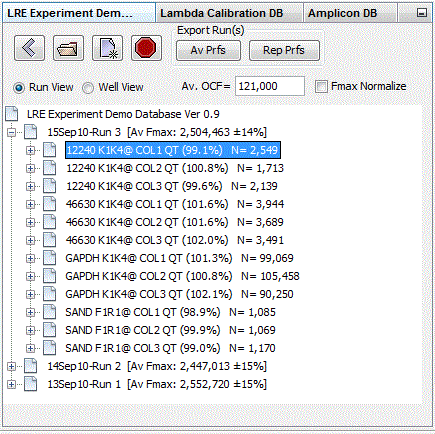
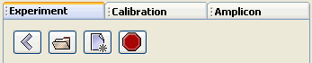

The Explorer Panel provides three windows for viewing data from each of the three database types:
Once a database file is opened, data elements are presented as a tree such that selecting an element will trigger the corresponding Editing Panel to appear. In this example, Run 3 within the demonstration experiment database has been opened and the first average profile has been selected:

Each explorer window contains a tool bar used for accessing their respective database files:

Loads the last opened database file
Open an existing database file
Create a new database file
Close the current database file
A more detailed description of the three LRE databases is provided in the Database Overview.
See also:
Experiment Database Window
Calibration Database Window
Amplicon Database Window